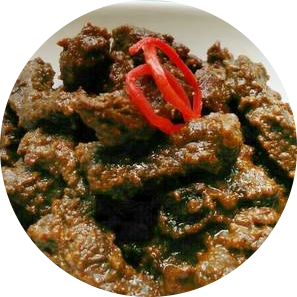

Karmanaci
Karmanaci adalah hidangan tradisional khas Nusa Tenggara Timur. Hidangan ini menggunakan daging sapi khas dalam atau tenderloin sebagai bahan utamanya. Karmanaci ini adalah sajian lezat yang dapat dibilang merupakan semurnya Indonesia Timur.
Bahan-Bahan
500 gram daging sapi has
3 sdm kecap manis
1 sdt asam jawa dan 1 sdm air, dilarutkan
1 sdt garam
1/2 sdm gula pasir
2 cm jahe, dimemarkan
500 ml air
3 sdm minyak goreng
Bumbu Halus:
10 butir bawang merah
3 siung bawang putih
2 cm lengkuas
2 sdt ketumbar sangrai
1/2 sdt adas manis sangrai
1/2 sdt merica bubuk
Cara Membuat
1. Potong-potong daging hasnya;
2. Campur daging hasnya, bumbu halus, dan kecap manisnya, lalu diaduk rata;
3. Tuang air asam, garam, jahe, gula pasir dan air. Kemudian masak sampai matang dan meresap sempurna;
4. Tambahkan minyak gorengnya, diaduk rata, dan sajikan.
